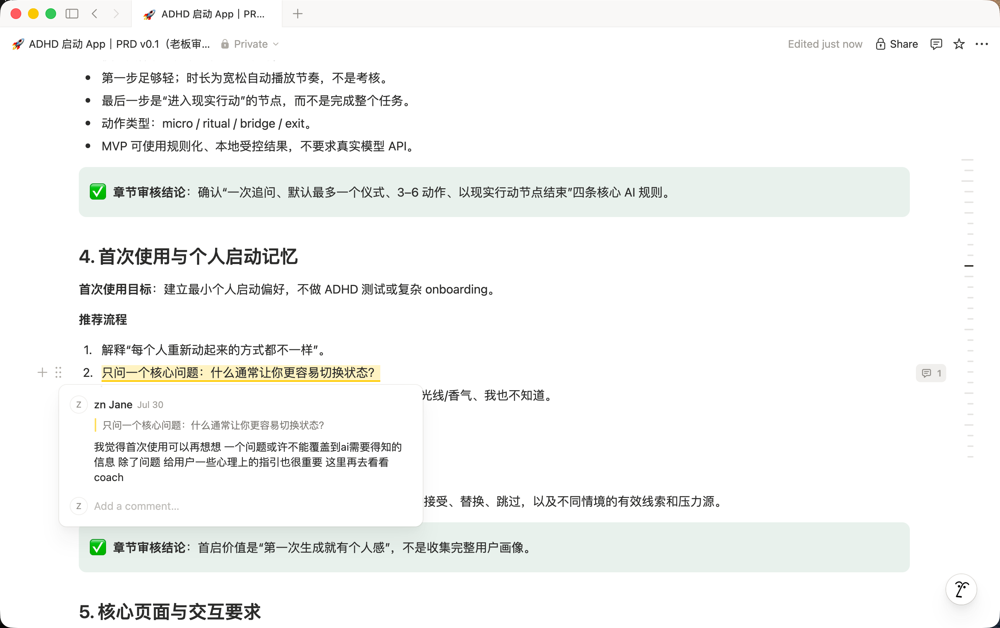
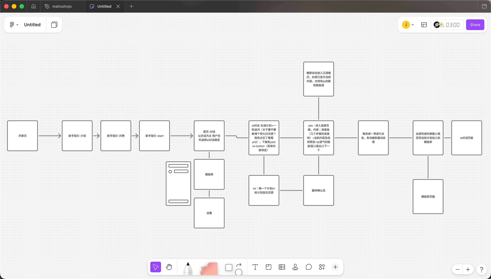
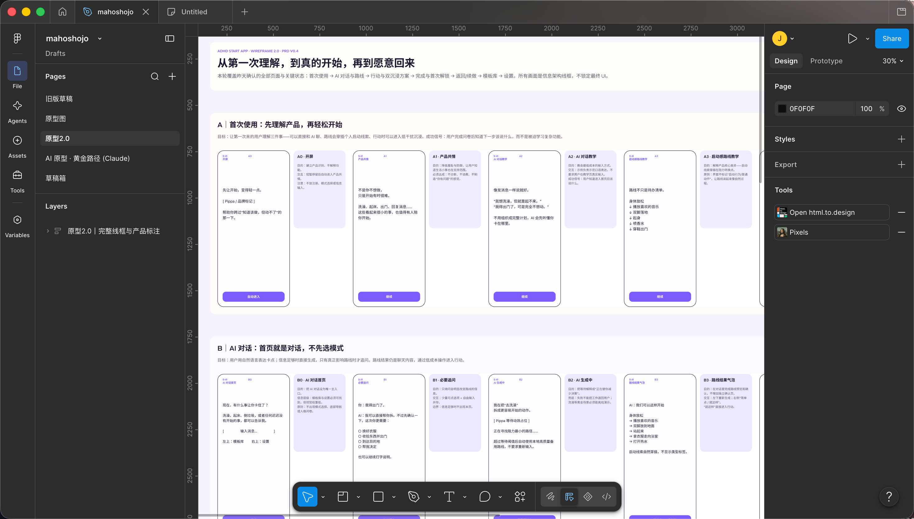
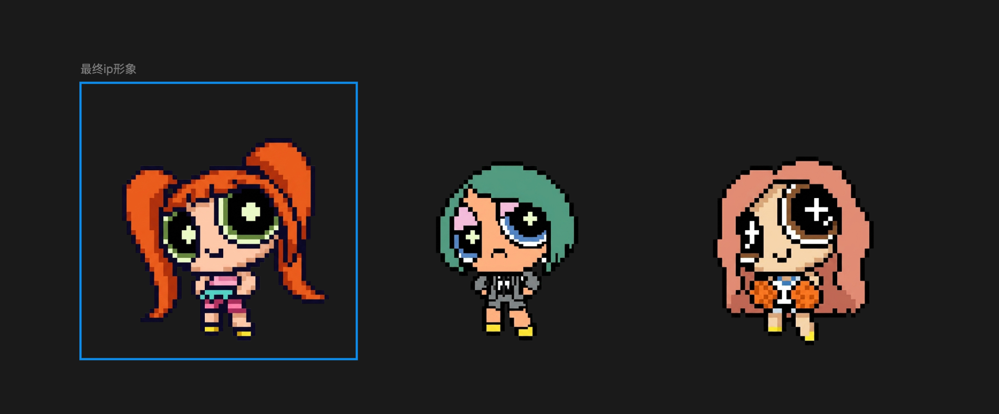
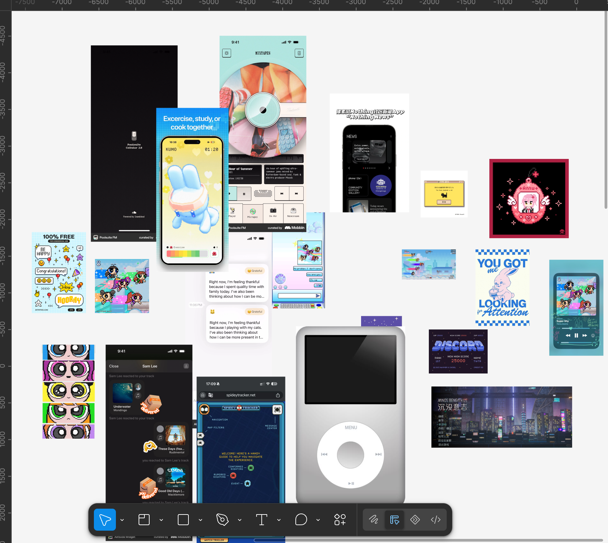
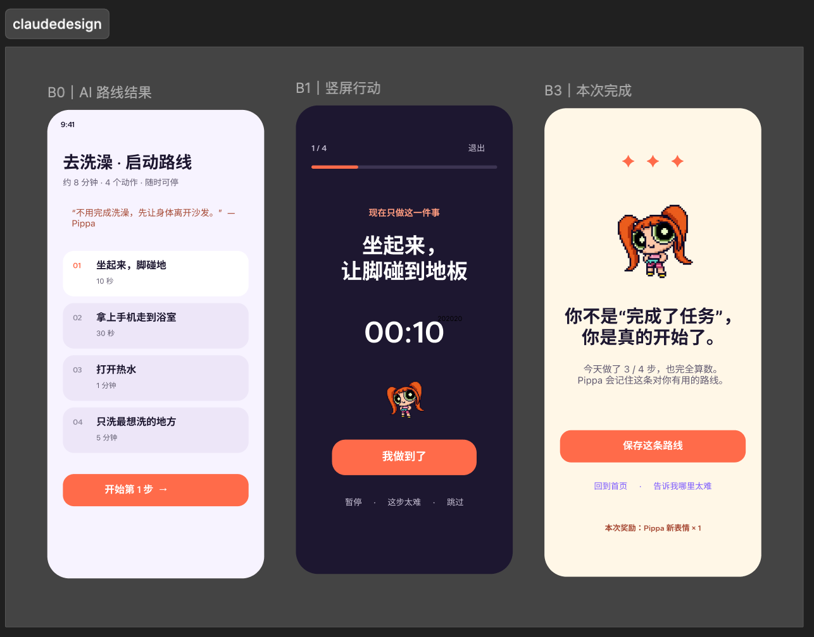
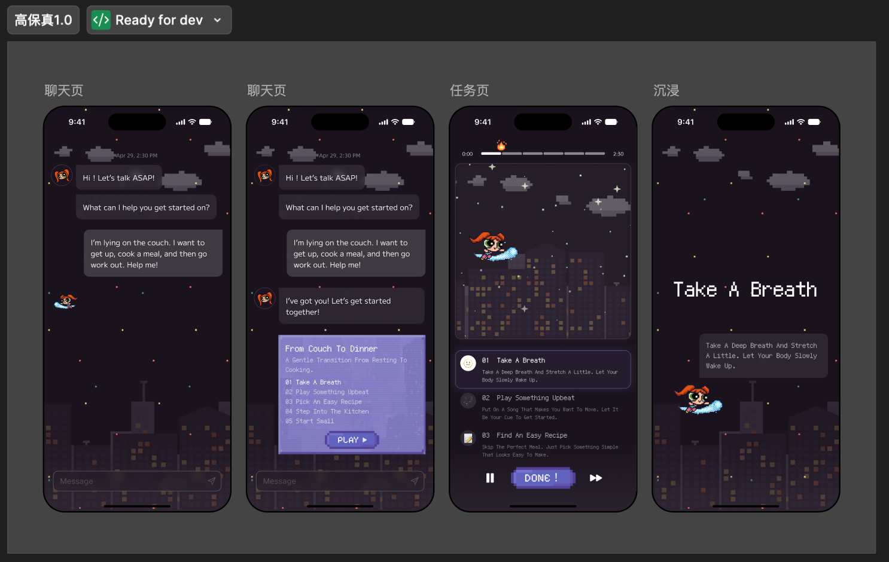
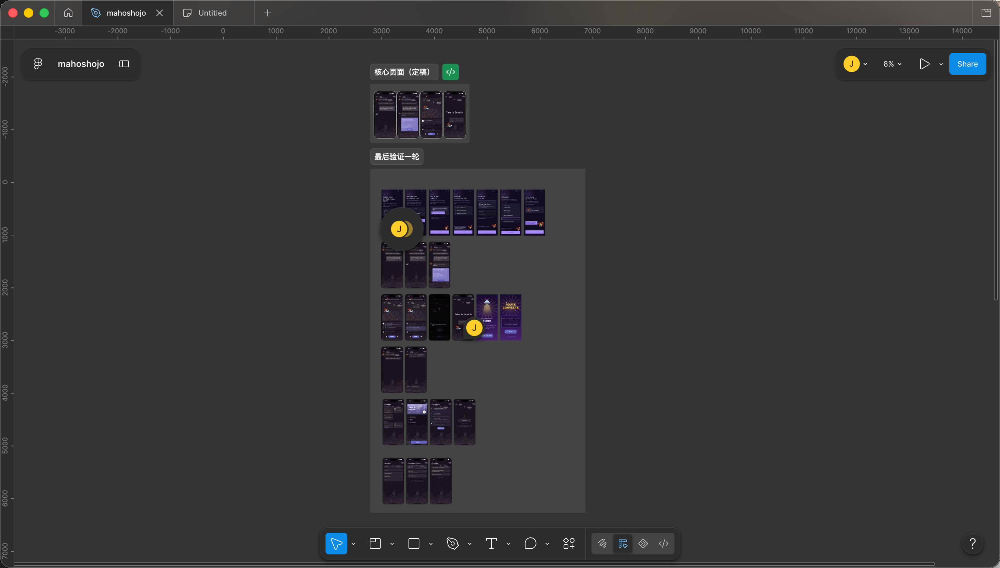
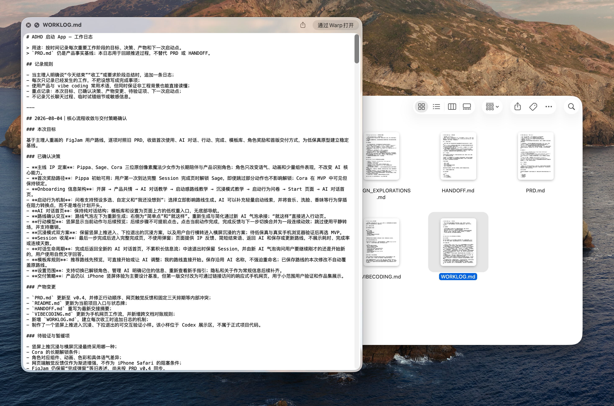
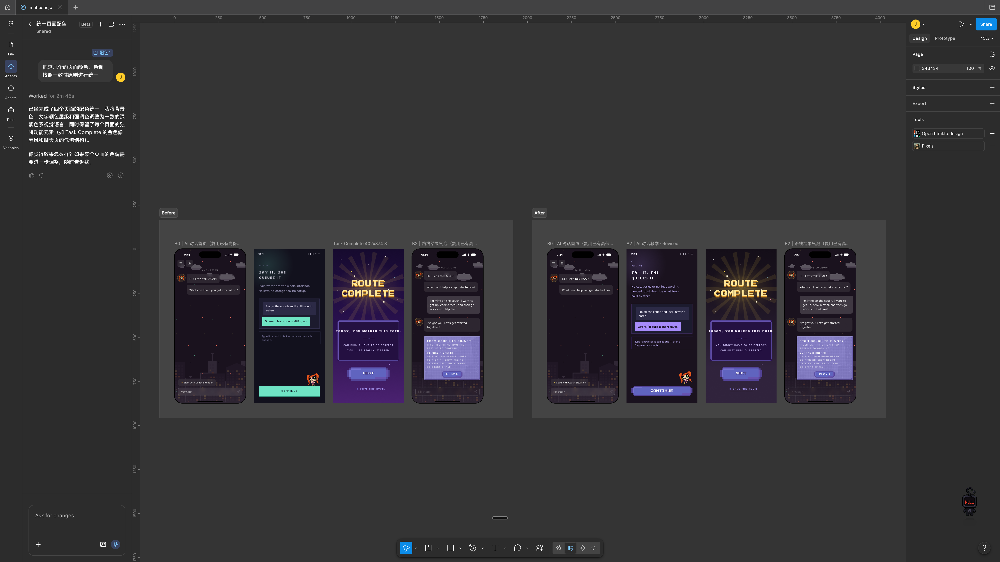

Vibe coding project
Mahoshojo
帮执行功能困难的人，把"知道该做什么"变成"真的开始"——一个用 vibe coding 做出来的可试玩原型。
Codex — 项目产品经理和管理者
Claude Code — 代码实现
Claude Design — 视觉提升和动效设计师
我是一个在生活中经常卡在"小事"上的人。
出于真实需求，这是一个为 ADHD（注意力缺陷）倾向的人群打造的自动化日程 SOP 应用，帮助解决启动困难的问题，提升日常生活效率。
01 · PRD
把直觉收敛成可验证的边界
PRD 阶段，围绕 ADHD 用户"知道要做什么，却很难开始"的核心困境，逐步明确了产品定位、目标用户与功能边界，并梳理出从首次引导、AI 对话拆解任务，到逐步行动、沉浸陪伴、完成反馈和角色解锁的完整流程。

02 · 低保真
锚定不确定点，不是决定视觉
低保真验证的是体验逻辑，不是视觉——把 PRD 的抽象流程变成可连续点击的体验，用来验证流程顺不顺、操作好不好懂，不是产品定稿。
| 方向 | 想验证的假设 | 结论 |
|---|---|---|
| 不显示时间相关的组件 | 隐藏计时、自动推进能否降低启动阻力 | 保留"播放器感"，但主流程改为用户主动完成 |
| 一步一确认 | 每步等待确认是否更可靠 | 部分采纳，形成 DONE 按钮，但没做成重型确认页 |
| 减少设备交互 | 触觉提醒能否维持离屏陪伴感 | 保留"沉浸、少看手机"的方向，触觉/后台路线基本放弃 |


03 · 视觉主导权
什么时候该让 AI 发散，什么时候必须自己定义
这是全篇第一个转折点——从跟 AI 一起探索方向，到自己接管核心视觉，中间走了三步。
和 Gemini 定 IP，给产品定调
我和 Gemini 反复交互，定出了像素魔法少女的 IP 形象——短身、简单、带点古怪的记忆点，这套形象后来定住了整个产品的调性。

做视觉 board，找概念和体验都对得上的方向
我做了一版视觉参考 board，把复古播放器、像素角色、蓝紫夜景这些外部参考拼在一起，圈出概念和体验都说得通的最终方向——不是原创画稿，是策展整理的一组参考，用来定方向，不是让 AI 照抄的成品。

语料充足的前提下，AI 仍无法达到高保真预期
我把 IP 形象和视觉 board 一起交给 AI，想看看能不能直接生成体验，结果拿回来的页面结构是对的，但配色和氛围完全跑偏——变成了暖橙色调，丢了我想要的深紫夜景感。于是我自己动手，做了四张核心页面，把真正的视觉语言定下来。


04 · 高保真扩展
把不同 AI 的输出收敛成同一套产品语言
核心视觉定好之后，剩下的页面交给 AI 拓展。
对话首页、任务推进、路线库、设置、角色选择这些页面，都交给 AI 按已经定好的视觉语言拓展——每张出来我再对照 Figma 核对一遍，比自己一张张画快很多。

完成页和 Sage 解锁这两个动效是 Claude Design 做的——像素风格的深色星空、不做评分排名的鼓励文案，是我给的具体要求。完成页点一下 NEXT 能看完整反馈。
05 · 思考
不是一次做完整，是先让它跑起来
这次 vibe coding 最大的体会：不要想着动手前把 PRD、全部页面和 Design System 一次做完整。前期走了不少弯路——花太多时间穷举细节、反复切换 AI，也做出过一些没真正跑起来的设计。后来找到更适合自己的节奏：先定一个小目标，做出能操作的纵向流程，在浏览器里真实体验，再根据问题迭代，把确认过的决定及时记录下来。下一次会更早进入可运行原型，用小闭环推进，同时明确不同 AI 的分工，避免讨论和产出不断膨胀却迟迟看不到真实结果。

